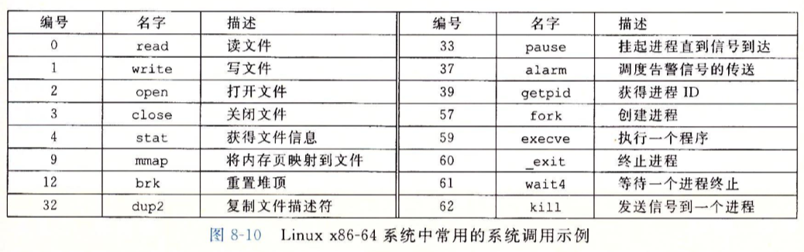
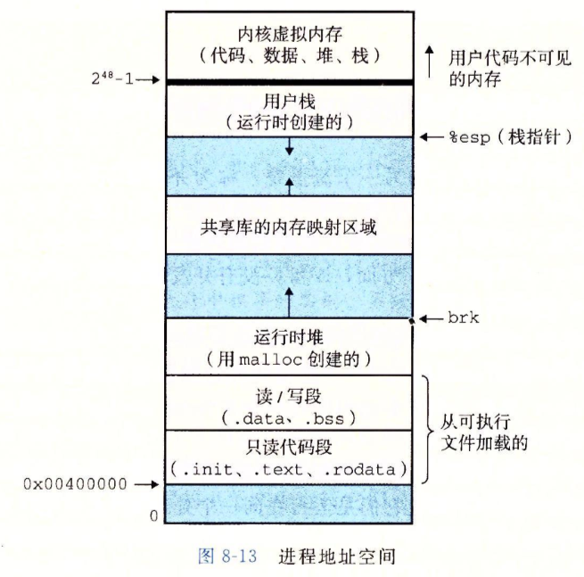
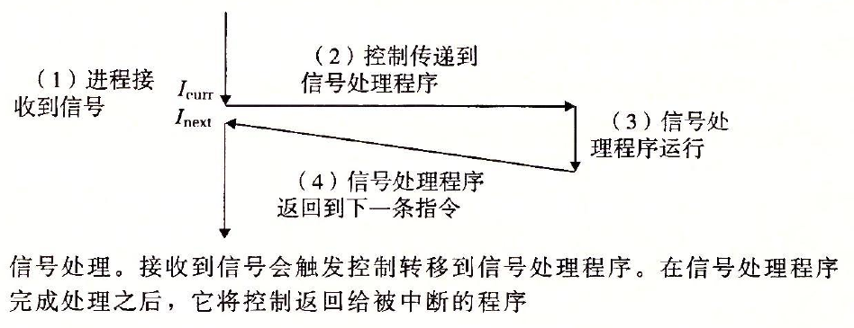
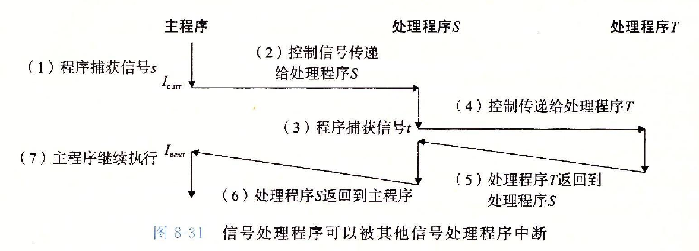

异常是异常控制流的一种形式，它一部分由硬件实现，一部分由操作系统实现。异常(exception)就是控制流中的突变，用来响应处理器状态中的某些变化。
当处理器状态中发生一个重要的变化时，处理器正在执行某个当前指令I[curr]。在处理器中，状态被编码为不同的位和信号。状态变化称为事件(event)。事件可能和当前指令的执行直接相关。比如，发生虚拟内存缺页、算术溢出，或者一
条指令试图除以零。另一方面，事件也可能和当前指令的执行没有关系。比如，一个系统定时器产生信号或者一个
I/O请求完成。
在任何情况下，当处理器检测到有事件发生时，它就会通过一张叫做异常表(exception table)的跳转表，进行一个间接过程调用(异常)，到一个专门设计用来处理这类事件的操作系统子程序(异常处理程序(exception handler) )。当异
常处理程序完成处理后，根据引起异常的事件的类型，会发生以下3种情况中的一种:
1)处理程序将控制返回给当前指令I[curr]，即当事件发生时正在执行的指令。
2)处理程序将控制返回给I[next]，如果没有发生异常将会执行的下一条指令。
3)处理程序终止被中断的程序。
异常处理
系统中可能的每种类型的异常都分配了一个唯一的非负整数的异常号(exception number)。其中一些号码是由处理器的设计者分配的，其他号码是由操作系统内核(操作系统常驻内存的部分)的设计者分配的。前者的示例包括被零除、
缺页、内存访问违例、断点以及算术运算溢出。后者的示例包括系统调用和来自外部I/O设备的信号。
在系统启动时(当计算机重启或者加电时)，操作系统分配和初始化一张称为异常表的跳转表，使得表目k包含异常k的处理程序的地址。
异常可以分为四类:中断(interrupt)、陷阱( trap)、故障(fault)和终止(abort )。
中断:中断是异步发生的，是来自处理器外部的I/O设备的信号的结果。硬件中断不是由任何一条专门的指令造成的，从这个意义上来说它是异步的。硬件中断的异常处理程序常常称为中断处理程序(interrupt handler).
剩下的异常类型(陷阱、故障和终止)是同步发生的，是执行当前指令的结果。我们把这类指令叫做故障指令(faulting instruction)。
陷阱和系统调用:陷阱是有意的异常，是执行一条指令的结果。就像中断处理程序一样，陷阱处理程序将控制返回到下一条指令。陷阱最重要的用途是在用户程序和内核之间提供一个像过程一样的接口，叫做系统调用。
从程序员的角度来看，系统调用和普通的函数调用是一样的。然而，它们的实现非常不同。普通的函数运行在用户模式中，用户模式限制了函数可以执行的指令的类型，而且它们只能访问与调用函数相同的栈。系统调用运行在内核模式中，
内核模式允许系统调用执行特权指令，并访问定义在内核中的栈。
故障：故障由错误情况引起，它可能能够被故障处理程序修正。当故障发生时，处理器将控制转移给故障处理程序。如果处理程序能够修正这个错误情况，它就将控制返回到引起故障的指令，从而重新执行它。否则，处理程序返回到内核
中的abort例程，abort例程会终止引起故障的应用程序。
终止:终止是不可恢复的致命错误造成的结果，通常是一些硬件错误，比如DRAM或者SRAM位被损坏时发生的奇偶错误。终止处理程序从不将控制返回给应用程序。
Linux/86-64系统调用
Linux提供几百种系统调用，当应用程序想要请求内核服务时可以使用，包括读文件、写文件或是创建一个新进程。下图给出了一些常见的Linux系统调用。每个系统调用都有一个唯一的整数号，对应于一个到内核中跳转表的偏移量。
(注意:这个跳转表和异常表不一样。)
C程序用syscall函数可以直接调用任何系统调用。然而，实际中几乎没必要这么做。对于大多数系统调用，标准C库提供了一组方便的包装函数。这些包装函数将参数打包到一起，以适当的系统调用指令陷人内核，然后将系统调用的
返回状态传递回调用程序。
在x86-64系统上，系统调用是通过一条称为syscall的陷阱指令来提供的。研究程序能够如何使用这条指令来直接调用Linux系统调用是很有趣的。所有到Linux系统调用的参数都是通过通用寄存器而不是栈传递的。按照惯例，寄存
器%rax包含系统调用号，寄存器%rdi,%rsi,%rdx,%rl0,%r8和%r9包含最多6个参数。第一个参数在%rdi中，第二个在%rsi中，以此类推。从系统调用返回时，寄存器%rcx和%rll都会被破坏，%rax包含返回值。-4095到-1之间的负
数返回值表明发生了错误，对应于负的errno

进程的经典定义就是一个执行中程序的实例。系统中的每个程序都运行在某个进程的上下文(context)中。上下文是由程序正确运行所需的状态组成的。这个状态包括存放在内存中的程序的代码和数据，它的栈、通用目的寄存器的内容、
程序计数器、环境变量以及打开文件描述符的集合。
进程提供给应用程序的关键抽象:
一个独立的逻辑控制流，它提供一个假象，好像我们的程序独占地使用处理器。
一个私有的地址空间，它提供一个假象，好像我们的程序独占地使用内存系统。
并发流
一个逻辑流的执行在时间上与另一个流重叠，称为并发流(concurrent flow)，这两个流被称为并发地运行。更准确地说，流X和Y互相并发，当且仅当X在Y开始之后和Y结束之前开始，或者Y在X开始之后和X结束之前开始。
多个流并发地执行的一般现象被称为并发(concurrency)。一个进程和其他进程轮流运行的概念称为多任务(multitasking)。一个进程执行它的控制流的一部分的每一时间段叫
做时间片(time slice)。因此，多任务也叫做时间分片(time slicing)。、
注意，并发流的思想与流运行的处理器核数或者计算机数无关。如果两个流在时间上重叠，那么它们就是并发的，即使它们是运行在同一个处理器上。不过，有时我们会发现确认
并行流是很有帮助的，它是并发流的一个真子集。如果两个流并发地运行在不同的处理器核或者计算机上，那么我们称它们为并行流(parallel flow)，它们并行地运行(running
in parallel)，且并行地执行(parallel execution)。
私有地址空间
进程也为每个程序提供一种假象，好像它独占地使用系统地址空间。在一台n位地址的机器上，地址空间是2的n次方个可能地址的集合，0, 1,…，2^n-1。进程为每个程序提供
它自己的私有地址空间。一般而言，和这个空间中某个地址相关联的那个内存字节是不能被其他进程读或者写的，从这个意义上说，这个地址空间是私有的。
尽管和每个私有地址空间相关联的内存的内容一般是不同的，但是每个这样的空间都有相同的通用结构。
下图展示了一个x86-64 Linu x进程的地址空间的组织结构。地址空间底部是保留给用户程序的，包括通常的代码、数据、堆和栈段。代码段总是从地址。x40000。开始。地
址空间顶部保留给内核(操作系统常驻内存的部分)。地址空间的这个部分包含内核在代表进程执行指令时(比如当应用程序执行系统调用时)使用的代码、数据和栈。

用户模式和内核模式
为了使操作系统内核提供一个无懈可击的进程抽象，处理器必须提供一种机制，限制一个应用可以执行的指令以及它可以访问的地址空间范围。处理器通常是用某个控制寄存器
中的一个模式位(mode bit)来提供这种功能的，该寄存器描述了进程当前享有的特权。当设置了模式位时，进程就运行在内核模式中(有时叫做超级用户模式)。一个运行在内核模
式的进程可以执行指令集中的任何指令，并且可以访问系统中的任何内存位置。
没有设置模式位时，进程就运行在用户模式中。用户模式中的进程不允许执行特权指令(privileged instruction)，比如停止处理器、改变模式位，或者发起一个I/O操作。
也不允许用户模式中的进程直接引用地址空间中内核区内的代码和数据。任何这样的尝试都会导致致命的保护故障。反之，用户程序必须通过系统调用接口间接地访问内核代码和
数据。
运行应用程序代码的进程初始时是在用户模式中的。进程从用户模式变为内核模式的唯一方法是通过诸如中断、故障或者陷人系统调用这样的异常。当异常发生时，控制传递
到异常处理程序，处理器将模式从用户模式变为内核模式。处理程序运行在内核模式中，当它返回到应用程序代码时，处理器就把模式从内核模式改回到用户模式。
Linux提供了一种聪明的机制，叫做/proc文件系统，它允许用户模式进程访问内核数据结构的内容。/proc文件系统将许多内核数据结构的内容输出为一个用户程序可以读的
文本文件的层次结构。比如，你可以使用/proc文件系统找出一般的系统属性，比如CPU类型(/proc/cpuinfo)，或者某个特殊的进程使用的内存段(/proc/
/maps)。
2.6版本的Linux内核引人/sys文件系统，它输出关于系统总线和设备的额外的低层信息。
上下文切换
操作系统内核使用一种称为上下文切换(context switch)的较高层形式的异常控制流来实现多任务。上下文切换机制是建立8.1中那些较低层异常机制之上的。
内核为每个进程维持一个上下文(context)。上下文就是内核重新启动一个被抢占的进程所需的状态。它由一些对象的值组成，这些对象包括通用目的寄存器、浮点寄存器、程
序计数器、用户栈、状态寄存器、内核栈和各种内核数据结构，比如描述地址空间的页表、包含有关当前进程信息的进程表，以及包含进程已打开文件的信息的文件表。
在进程执行的某些时刻，内核可以决定抢占当前进程，并重新开始一个先前被抢占了的进程。这种决策就叫做调度(scheduling)，是由内核中称为调度器(scheduler)的代码
处理的。当内核选择一个新的进程运行时，我们说内核调度了这个进程。在内核调度了一个新的进程运行后，它就抢占当前进程，并使用一种称为上下文切换的机制来将控制转移到
新的进程，上下文切换：
1)保存当前进程的上下文
2)恢复某个先前被抢占的进程被保存的上下文
3)将控制传递给这个新恢复的进程。
当内核代表用户执行系统调用时，可能会发生上下文切换。如果系统调用因为等待某个事件发生而阻塞，那么内核可以让当前进程休眠，切换到另一个进程。比如，如果一个
read系统调用需要访问磁盘，内核可以选择执行上下文切换，运行另外一个进程，而不是等待数据从磁盘到达。另一个示例是sleep系统调用，它显式地请求让调用进程休眠。一般
而言，即使系统调用没有阻塞，内核也可以决定执行上下文切换，而不是将控制返回给调用进程。
中断也可能引发上下文切换。比如，所有的系统都有某种产生周期性定时器中断的机制，通常为每1毫秒或每10毫秒。每次发生定时器中断时，内核就能判定当前进程已经运行
了足够长的时间，并切换到一个新的进程。
获取进程ID
每个进程都有一个唯一的正数(非零)进程ID(PID)。getppid函数返回它的父进程的PID(创建调用进程的进程)。
#include
#include
pid_t getpid(void);
pid_t getppid(void);
返回:调用者或其父进程的PID.
getpid和getppid函数返回一个类型为pid_t的整数值，在Linux系统上它在types.h中被定义为int。
创建和终止进程
从程序员的角度，我们可以认为进程总是处于下面三种状态之一:
.运行。进程要么在CPU上执行，要么在等待被执行且最终会被内核调度。
.停止。进程的执行被挂起(suspended)，且不会被调度。当收到SIGSTOP, SIGTSTP, SIGTTIN或者SIGTTOU信号时，进程就停止，并且保持停止直到它收到一个SIGCONT信号，在这个时刻，进程再次开始运行。(信号是一种软件中断的形式)
.终止。进程永远地停止了。进程会因为三种原因终止:
1)收到一个信号，该信号的默认行为是终止进程
2)从主程序返回
3)调用exit函数
#include
void exit(int status)
该函数不返回
exit函数以status退出状态来终止进程(另一种设置退出状态的方法是从主程序中返回一个整数值)。
父进程通过调用fork函数创建一个新的运行的子进程。
#include
#include
pid_t fork(void)
返回:子进程返回0，父进程返回子进程的PID，如果出错，则为-1
新创建的子进程几乎但不完全与父进程相同。子进程得到与父进程用户级虚拟地址空间相同的(但是独立的)一份副本，包括代码和数据段、堆、共享库以及用户栈。子进程还获
得与父进程任何打开文件描述符相同的副本，这就意味着当父进程调用fork时，子进程可以读写父进程中打开的任何文件。父进程和新创建的子进程之间最大的区别在于它们有不同
的PID。
fork函数只被调用一次，却会返回两次:一次是在调用进程(父进程)中，一次是在新创建的子进程中。在父进程中，fork返回子进程的PID。在子进程中，fork返回0。因为子进
程的PID总是为非零，返回值就提供一个明确的方法来分辨程序是在父进程还是在子进程中执行。
.调用一次，返回两次。fork函数被父进程调用一次，但是却返回两次，一次是返回到父进程，一次是返回到新创建的子进程。对于只创建一个子进程的程序来说，这还是相当简单
直接的。但是具有多个fork实例的程序可能就会令人迷惑，需要仔细地推敲了。
.并发执行。父进程和子进程是并发运行的独立进程。内核能够以任意方式交替执行它们的逻辑控制流中的指令。一般而言，作为程序员，我们决不能对不同进程中指令的交替执行做任何假设。
.相同但是独立的地址空间。如果能够在fork函数在父进程和子进程中返回后立即暂停这两个进程，我们会看到两个进程的地址空间都是相同的。每个进程有相同的用户栈、相同的
本地变量值、相同的堆、相同的全局变量值，以及相同的代码。然而，因为父进程和子进程是独立的进程，它们都有自己的私有地址空间。
.共享文件。当运行这个示例程序时，子进程继承了父进程所有的打开文件。
回收子进程
当一个进程由于某种原因终止时，内核并不是立即把它从系统中清除。相反，进程被保持在一种已终止的状态中，直到被它的父进程回收(reaped)。当父进程回收已终止的子
进程时，内核将子进程的退出状态传递给父进程，然后抛弃已终止的进程，从此时开始，该进程就不存在了。一个终止了但还未被回收的进程称为僵死进程(zombie) 。
如果一个父进程终止了，内核会安排ini七进程成为它的孤儿进程的养父。ini七进程的PID为1，是在系统启动时由内核创建的，它不会终止，是所有进程的祖先。如果父进
程没有回收它的僵死子进程就终止了，那么内核会安排init进程去回收它们。不过，长时间运行的程序，比如shell或者服务器，总是应该回收它们的僵死子进程。即使僵死子进程
没有运行，它们仍然消耗系统的内存资源。
一个进程可以通过调用waitpid函数来等待它的子进程终止或者停止。
#include
#include
pid_t waitpid(pid_t pid, int *statusp,int options)
返回:如果成功，则为子进程的PID，如果WNOHANG，则为0，如果其他错误，则为一1.
waitpid函数有点复杂。默认情况下(当options=0时)，waitpid挂起调用进程的执行，直到它的等待集合(wait set)中的一个子进程终止。如果等待集合中的一个进程在刚
调用的时刻就已经终止了，那么waitpid就立即返回。在这两种情况中，waitpid返回导致waitpid返回的已终止子进程的PID。此时，已终止的子进程已经被回收，内核会从系统
中删除掉它的所有痕迹。
1.判定等待集合的成员
等待集合的成员是由参数pid来确定的:
如果pid>0，那么等待集合就是一个单独的子进程，它的进程ID等于pid。
如果pid=-1，那么等待集合就是由父进程所有的子进程组成的。
waitpid函数还支持其他类型的等待集合，包括Unix进程组。
2.修改默认行为
可以通过将。ptions设置为常量WNOHANG, WUNTRACED和WCONTINUED的各种组合来修改默认行为:
WNOHANG:如果等待集合中的任何子进程都还没有终止，那么就立即返回(返回值为0)。默认的行为是挂起调用进程，直到有子进程终止。在等待子进程终止的同时，如果还想做些有用的工作，这个选项会有用。
WUNTRACED:挂起调用进程的执行，直到等待集合中的一个进程变成已终止或者被停止。返回的PID为导致返回的已终止或被停止子进程的PID。默认的行为是只返回已终止的子进程。当你想要检查已终止和被停止的子进程时，这个选项会有用。
WCONTINUED:挂起调用进程的执行，直到等待集合中一个正在运行的进程终止或等待集合中一个被停止的进程收到SIGCONT信号重新开始执行。可以用或运算把这些选项组合起来。
WNOHANG|WUNTRACED:立即返回，如果等待集合中的子进程都没有被停止或终止，则返回值为0;如果有一个停止或终止，则返回值为该子进程的PID。
3.检查已回收子进程的退出状态
如果,statusp参数是非空的，那么waitpid就会在status中放上关于导致返回的子进程的状态信息，status是statusp指向的值。wait.h头文件定义了解释status参数的几个宏:
WIFEXITED(status):如果子进程通过调用exit或者一个返回(return)正常终止，就返回真。
WEXITSTATUS(status):返回一个正常终止的子进程的退出状态。只有在WIFEXITED()返回为真时，才会定义这个状态。
WIFSIGNALED(status):如果子进程是因为一个未被捕获的信号终止的，那么就返回真。
WTERMSIG(status):返回导致子进程终止的信号的编号。只有在WIFSIGNALED()返回为真时，才定义这个状态。
WIFSTOPPED(status):如果引起返回的子进程当前是停止的，那么就返回真。
WSTOPSIG(status):返回引起子进程停止的信号的编号。只有在WIFSTOPPED()返回为真时，才定义这个状态。
WIFCONTINUED(status):如果子进程收到SIGCONT信号重新启动，则返回真。
4.错误条件
如果调用进程没有子进程，那么waitpid返回-1，并且设置errno为ECHILD。如果waitpid函数被一个信号中断，那么它返回-1，并设置errno为EINTR。
5.wait函数
wait函数是waitpid函数的简单版本:
#include
#include
pid_t wait(int *statusp)
返回:如果成功，则为子进程的Pid，如果出错，则为-1.
调用wait(&status)等价于调用waitpid(1,&status,0)。
让进程休眠
sleep函数将一个进程挂起一段指定的时间。
#include
unsigned int sleep (unsigned int sets);
返回:还要休眠的秒数。
如果请求的时间量已经到了，sleep返回。，否则返回还剩下的要休眠的秒数。后一种情况是可能的，如果因为sleep函数被一个信号中断而过早地返回。
我们会发现另一个很有用的函数是pause函数，该函数让调用函数休眠，直到该进程收到一个信号。
#include
int pause(void)
总是返回-l。
加载并运行程序
execve函数在当前进程的上下文中加载并运行一个新程序。
#include
int execve(const char *filename, const char *argv[], const char *envp[]);
如果成功，则不返回，如果错误，则返回-1.
execve函数加载并运行可执行目标文件filename，且带参数列表argv和环境变量envp。只有当出现错误时，例如找不到filename, execve才会返回到调用程序。与fork一次调用返回两次不同，execve调用一次并从不返回。
参数列表argv变量指向一个以null结尾的指针数组，其中每个指针都指向一个参数字符串。按照惯例，argv[0]是可执行目标文件的名字。环境变量的列表是由一个类似的数据结构表示的，envp变量指向一个以null结尾的指针数组，
其中每个指针指向一个环境变量字符串，每个串都是形如"name=value"，的名字——值对。
在execve加载了filename之后，它调用启动代码。启动代码设置栈，并将控制传递给新程序的主函数，该主函数有如下形式的原型
int main(int argc，char **argv,char **envp);
或者等价的
int main(int argc，char *argv[]，char *envp[]);
main函数有3个参数:
1) argc，它给出argv[]数组中非空指针的数量;
2) argv,指向argv[]数组中的第一个条目;
3) envp，指向envp []数组中的第一个条目。
Linux提供了几个函数来操作环境数组:
#include
char *getenv(const char *name);
返回:若存在则为指向name的指针，若无匹配的，则为NULL,
getenv函数在环境数组中搜索字符串"name=value"。如果找到了，它就返回一个指向value的指针，否则它就返回NULL。
#include
int setenv(const char *name，const char *newvalue，int overwrite)
返回:若成功则为0，若错误则为-1.
void unsetenv(const char *name)
返回:无。
如果环境数组包含一个形如"name=oldvalue"的字符串，那么unsetenv会删除它，而setenv会用newvalue代替oldvalue，但是只有在overwirte非零时才会这样。如果name不存在，那么setenv就把"name=newvalue"添加到数组中。
作业2--------------------------------------------------------------------------------------------
Linux信号，它允许进程和内核中断其他进程。一个信号就是一条小消息，它通知进程系统中发生了一个某种类型的事件。每种信号类型都对应于某种系统事件。低层的硬件异常是由内核异常处理程序处理的，正常情况下，对用户进程而言是
不可见的。信号提供了一种机制，通知用户进程发生了这些异常。比如:
如果一个进程试图除以0那么内核就发送给它一个SIGFPE信号;
如果一个进程执行一条非法指令，那么内核就发送给它一个SIGILL信号;
如果进程进行非法内存引用，内核就发送给它一个SIGSEGV信号;
其他信号对应于内核或者其他用户进程中较高层的软件事件;
如果当进程在前台运行时，你键人Ctrl+C(也就是同时按下Ctrl键和C键)，那么内核就会发送一个SIGINT信号(给这个前台进程组中的每个进程;
一个进程可以通过向另一个进程发送一个SIGKII信号强制终止它;
当一个子进程终止或者停止时，内核会发送一个SIGCHLI信号给父进程;
信号术语
传送一个信号到目的进程是由两个不同步骤组成的:
发送信号。内核通过更新目的进程上下文中的某个状态，发送(递送)一个信号给目的进程。发送信号可以有如下两种原因:
内核检测到一个系统事件，比如除零错误或者子进程终止
一个进程调用了kill函数，显式地要求内核发送一个信号给目的进程。一个进程可以发送信号给它自己
接收信号。当目的进程被内核强迫以某种方式对信号的发送做出反应时，它就接收了信号。进程可以忽略这个信号，终止或者通过执行一个称为信号处理程序(signal han-dler)的用户层函数捕获这个信号。
信号处理程序捕获信号的基本思想：接收到信号会触发控制转移到信号处理程序。在信号处理程序完成处理之后，它将控制返回给被中断的程序

进程接收到信号
控制传递到信号处理程序
信号处理程序运行
信号处理程序返回到被中断进程的下一条指令
一个发出而没有被接收的信号叫做待处理信号(pending signal)。在任何时刻，一种类型至多只会有一个待处理信号。如果一个进程有一个类型为k的待处理信号，那么任何接下来发送到这个进程的类型为k的信号都不会排队等待;
它们只是被简单地丢弃。一个进程可以有选择性地阻塞接收某种信号。当一种信号被阻塞时，它仍可以被发送，但是产生的待处理信号不会被接收，直到进程取消对这种信号的阻塞。
一个待处理信号最多只能被接收一次。内核为每个进程在pending位向量中维护着待处理信号的集合，而在blocked位向量中维护着被阻塞的信号集合。只要传送了一个类型为k的信号，内核就会设置pending中的第k位，而只要接收
了一个类型为k的信号，内核就会清除pending中的第k位。
发送信号
Unix系统提供了大量向进程发送信号的机制。所有这些机制都是基于进程组(process group)这个概念的。
进程组
每个进程都只属于一个进程组，进程组是由一个正整数进程组ID来标识的。getpgrp函数返回当前进程的进程组ID:
#include
pid_t getpgrp(void);
返回:调用进程的进程组ID
默认地，一个子进程和它的父进程同属于一个进程组。一个进程可以通过使用setpgid函数来改变自己或者其他进程的进程组:
#include
int setpgid(pid_t pid,pid_t pgid)
返回:若成功则为0，若错误则为-1。
setpgid函数将进程的进程组改为pgid。如果pid是0，那么就使用当前进程的PID。如果pgid是0，那么就用pid指定的进程的PID作为进程组ID。
用/bin/kill程序发送信号
/bin/kill程序可以向另外的进程发送任意的信号。比如，命令
linux> /bin/kill -9 15213
发送信号9 (SIGKILL)给进程15213。
一个为负的PID会导致信号被发送到进程组PID中的每个进程。比如，命令
linux> /bin/kill -9 -15213
发送一个SIGKILL信号给进程组15213中的每个进程。注意，在此我们使用完整路径/bin/kill，因为有些Unix shell有自己内置的kill命令。
从键盘发送信号
Unix shell使用作业(job)这个抽象概念来表示为对一条命令行求值而创建的进程。在任何时刻，至多只有一个前台作业和0个或多个后台作业。比如，键入
linux> ls / sort
会创建一个由两个进程组成的前台作业，这两个进程是通过Unix管道连接起来的:一个进程运行ls程序，另一个运行sort程序。shell为每个作业创建一个独立的进程组。进程组ID通常取自作业中父进程中的一个。
用kill函数发送信号
进程通过调用kill函数发送信号给其他进程(包括它们自己)
#include
#include
int kill(pid_t pid, int sig);
返回:若成功则为0，若错误则为-1。
如果pid大于零，那么kill函数发送信号号码sig给进程pid。如果pid等于零，那么kill发送信号sig给调用进程所在进程组中的每个进程，包括调用进程自己。如果pid小于零，kill发送信号sig给进程组|pidl|(pid的绝对值)中
的每个进程。
用alarm函数发送信号
进程可以通过调用alarm函数向它自己发送SIGALRM信号：
#include
unsigned int alarm(unsigned int sets);
返回:前一次闹钟剩余的秒数，若以前没有设定闹钟，则为0.
alarm函数安排内核在sets秒后发送一个SIGALRM信号给调用进程。如果sets是零，那么不会调度安排新的闹钟(alarm)。在任何情况下，对alarm的调用都将取消任何待处理的(pending)闹钟，并且返回任何待处理的闹钟在被
发送前还剩下的秒数(如果这次对alarm的调用没有取消它的话);如果没有任何待处理的闹钟，就返回零。
接收信号
当内核把进程p从内核模式切换到用户模式时(例如，从系统调用返回或是完成了一次上下文切换)，它会检查进程p的未被阻塞的待处理信号的集合(pending &~blocked)。
如果这个集合为空(通常情况下)，那么内核将控制传递到p的逻辑控制流中的下一条指令(I
)。然而，如果集合是非空的，那么内核选择集合中的某个信号k(通常是最小的k),
并且强制p接收信号k。收到这个信号会触发进程采取某种行为。一旦进程完成了这个行为，那么控制就传递回p的逻辑控制流中的下一条指令(I)。每个信号类型都有一个预
定义的默认行为，是下面中的一种:
进程终止
进程终止并转储内存
进程停止(挂起)直到被SIGCONT信号重启
进程忽略该信号
收到SIGKILI的默认行为就是终止接收进程。另外，接收到SIGCHLD的默认行为就是忽略这个信号。进程可以通过使用signal函数修改和信号相关联的默认行为。唯一的例外
是SIGSTOP和SIGKILL,它们的默认行为是不能修改的。
#include
typedef void (*sighandler_t)(int);
sighandler_t signal(int signum, sighandler_t handler);
返回:若成功则为指向前次处理程序的指针，若出错则为SIG_ERR(不设置errno)。
signal函数可以通过下列三种方法之一来改变和信号signum相关联的行为:
如果handler是SIG_IGN，那么忽略类型为signum的信号
如果handler是SIG_DFL，那么类型为signum的信号行为恢复为默认行为
否则，handler就是用户定义的函数的地址，这个函数被称为信号处理程序，只要进程接收到一个类型为signum的信号，就会调用这个程序。通过把处理程序的地址传递到signal函数从而改变默认行为，这叫做设置信号处理程序
(installing the handler)。调用信号处理程序被称为捕获信号。执行信号处理程序被称为处理信号
当一个进程捕获了一个类型为k的信号时，会调用为信号k设置的处理程序，一个整数参数被设置为k。这个参数允许同一个处理函数捕获不同类型的信号。
当处理程序执行它的return语句时，控制(通常)传递回控制流中进程被信号接收中断位置处的指令。我们说“通常”是因为在某些系统中，被中断的系统调用会立即返回一个错误。
下面展示了一个程序，它捕获用户在键盘上输人Ctrl-C时发送的SIGINT信号。SIGINT的默认行为是立即终止该进程。在这个示例中，我们将默认行为修改为捕获信号，输出一条消息，然后终止该进程。
#include "csapp.h"
void sigint handler(int sig)/*SIGINT handler*/
{
printf("Caught SIGINT!\n");
exit (0);
}
int main()
{
/*Install the SIGINT handler*/
if (signal(SIGINT, sigint handler)==SIG_ERR)
unix_error("signal error");
pause();/*Wait for the receipt of a signal*/
return 0;
}
一个用信号处理程序捕获SIUINT信号的程序
信号处理程序也可以被其他信号处理程序中断，如下图所示。主程序捕获到信号s，该信号会中断主程序，将控制转移到处理程序S, S在运行时，程序捕获信号t!=s，该信号会中断S，控制转移到处理程序T。
当T返回时，S从它被中断的地方继续执行。最后，S返回，控制传送回主程序，主程序从它被中断的地方继续执行：

阻塞和解除阻塞信号
Linux提供阻塞信号的隐式和显式的机制:
隐式阻塞机制。内核默认阻塞任何当前处理程序正在处理信号类型的待处理的信号。
显式阻塞机制。应用程序可以使用sigprocmask函数和它的辅助函数，明确地阻塞和解除阻塞选定的信号。
#include
int sigprocmask(int how, const sigset t *set，sigset_t *oldset);
int sigemptyset(sigset_t *set);
int sigfillset(sigset_t *set);
int sigaddset(sigset_t *set，int signum);
int sigdelset(sigset_t *set，int signum);
返回:如果成功则为0 若出错则为-1.
int sigismember(const sigset_t *set，int signum);
返回:若signum是set的成员则为1，如果不是则为0.若出错则为-1.
sigprocmask函数改变当前阻塞的信号集合(blocked位向量)。具体的行为依赖于how的值:
SIG_BLOCK:把set中的信号添加到blocked中(blocked=blocked | set).
SIG_UNBLOCK:从blocked中删除set中的信号(blocked=blocked & set).
SIG_SETMASK:block=set.
如果oldset非空，那么blocked位向量之前的值保存在oldset中。
使用下述函数对set信号集合进行操作:
sigemptyset初始化set为空集合;
sigfillset函数把每个信号都添加到set中;
sigaddset函数把signum添加到set;
sigdelset从set中删除signum;
如果signum是set的成员，那么sigismember返回1，否则返回0。
例如，下面代码展示了如何用sigprocmask来临时阻塞接收SIGINT信号。
sigset_t mask, prey_mask
Sigemptyset(&mask);
Sigaddset(&mask, SIGINT)
/*Block SIGINT and save previous blocked set*/
Sigprocmask(SIG_BLOCK, &mask，&prev_mask);
// Code region that will not be interrupted by SIGINT
/*Restore previous blocked set，unblocking SIGINT*/
Sigprocmask(SIG_SETMASK, &prev_mask, NULL);
临时阻塞接收一个信号
可移植的信号处理
Unix信号处理的另一个缺陷在于不同的系统有不同的信号处理语义。例如:
signal函数的语义各有不同。有些老的Unix系统在信号k被处理程序捕获之后就把对信号k的反应恢复到默认值。在这些系统上，每次运行之后，处理程序必须调用signal函数，显式地重新设置它自己。
系统调用可以被中断。像read、write和accept这样的系统调用潜在地会阻塞进程一段较长的时间，称为慢速系统调用。在某些较早版本的Unix系统中，当处理程序捕获到一个信号时，被中断的慢速系统调用在信号处理程序返回时
不再继续，而是立即返回给用户一个错误条件，并将errn。设置为EINTR。在这些系统上，程序员必须包括手动重启被中断的系统调用的代码。
要解决这些问题，Posix标准定义了sigaction函数，它允许用户在设置信号处理时，明确指定他们想要的信号处理语义。
#include
int sigaction(int signum, struct sigaction *act, struct sigaction *oldact);
返回:若成功则为0，若出错则为-1
C语言提供了一种用户级异常控制流形式，称为非本地跳转(nonlocal jump)，它将控制直接从一个函数转移到另一个当前正在执行的函数，而不需要经过正常的调用——返回序列。非本地跳转是通过。etjmp和longjmp函数来提供的。
#include
int setjmp(jmp_buf env);
int sigsetjmp(sigjmp_buf env, int savesigs);
返回:setjmp返回0, longjmp返回非零。
setjmp函数在env缓冲区中保存当前调用环境，以供后面的longjmp使用，并返回0。调用环境包括程序计数器、栈指针和通用目的寄存器。setjmp返回的值不能被赋值给变量:
rc = setjmp(env);/*Wrong!*/
不过它可以安全地用在switch或条件语句的测试中。
#include
void longjmp(jmp_buf env, int retval);
void siglongjmp(sigjmp_buf env, int retval);
从不返回。
longjmp函数从env缓冲区中恢复调用环境，然后触发一个从最近一次初始化env的setjmp调用的返回。然后setjmp返回，并带有非零的返回值retval。
setjmp和longjmp之间的相互关系令人迷惑。setjmp函数只被调用一次，但返回多次:一次是当第一次调用setjmp，而调用环境保存在缓冲区env中时，一次是
为每个相应的longjmp调用。另一方面，longjmp函数被调用一次，但从不返回。
非本地跳转的一个重要应用就是允许从一个深层嵌套的函数调用中立即返回，通常是由检测到某个错误情况引起的。如果在一个深层嵌套的函数调用中发现了一个错误情况，我
们可以使用非本地跳转直接返回到一个普通的本地化的错误处理程序，而不是费力地解开调用栈。
调用中分配了某些数据结构，本来预期在函数结尾处释放它们，那么这些释放代码会被跳过，因而会产生内存泄漏。
非本地跳转的另一个重要应用是使一个信号处理程序分支到一个特殊的代码位置，而不是返回到被信号到达中断了的指令的位置。